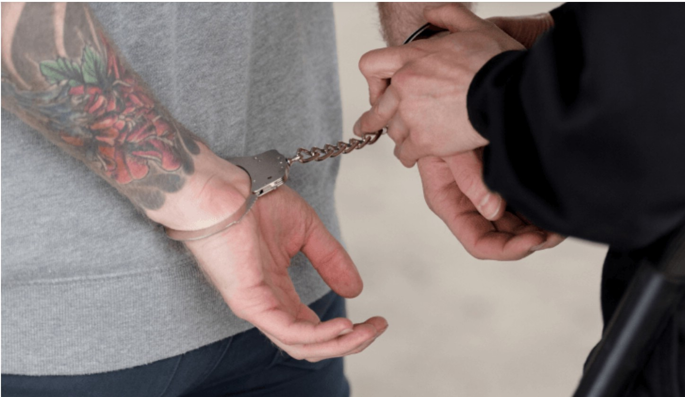

Адвокаты по "половым преступлениям" - ст 131, 132-135 УК.
Категория уголовных дел по преступлениям против половой неприкосновенности и половой свободы (так называемые «половые преступления») – ст. 131, ст. 132, ст. 133, ст. 134, ст. 135 УК РФ относятся к делам особо тяжким и сложным, в плане защиты.
Анализируя практику наших адвокатов по уголовным делам против половой неприкосновенности, напрашивается один вывод - большая часть этих дел была «выдумана» потерпевшими, для решения определенных финансовых вопросов.

Дела по статьям 131 - 135 УК РФ редко становяться темой обсуждения, о них все умалчивают, «опускают вниз глаза», словно таких дел вовсе нет, нет и проблем связанных с делами данной категории. Эти дела рассматриваются «за закрытыми дверями», т.к. они затрагивают интимную жизнь участников «конфликта», в том числе и детей, поэтому любое упоминание их фамилий категорически запрещено. В связи с этим, полностью раскрыть сведения в своих кейсах мы не можем.
Все указанные обстоятельства делают щепетильной защиту по уголовным делам по половым преступлениям и требуют от адвоката по ст. 131–135 УК РФ особой внимательности, такта и психологических навыков.
Между тем, нашим адвокатам удается достич положительных результатов в своей кропотливой работе, в числе которых оправдательные приговоры и прекращения уголовных дел.
Адвокаты по ст.132-135 УК
8 (925) 502-40-09
8 (925) 502-40-09
Адвокаты по ст. 131, 132, 133, 134, 135 осуществляют защиту:
-
Во время опроса или допроса подозреваемого
-
При оперативных или следственных действиях
-
На стадии предварительного следствия
-
При обжаловании постановлений о возбуждении или об отказе в возбуждении уголовного дела
-
При обжаловании незаконных действий и решений следователя
-
По защите обвиняемого, подсудимого в судебных инстанциях
-
Обжалуют приговор в апелляционном и кассационном порядке в вышестоящие суды
-
Представляют интересы потерпевших на стадиях предварительного следствия и в суде
-
Проводят процедуру УДО (условно-досрочного освобождения)
Как защищает адвокат по ст.131-135 УК ?
-
Вступает в дело и изучает все доступные материалы уг. дела;
-
Формирует позицию защиты или алиби;
-
Посещает подозреваемого/обвиняемого по месту его нахождения в СИЗО;
-
Готовит и направляет следователю необходимые ходатайства по делу;
-
Принимает меры по сбору необходимых доказательств защиты;
-
Заявляет доказательства на стадии предварительного следствия;
-
Обжалует действия следователя в суд или прокуратуру;
-
Участвует при формировании квалификации содеянного;
-
По итогам следствия изучает все материалы уг. дела и анализирует их;
-
Оспаривает квалификацию в прокуратуру;
-
Ведет защиту обвиняемого в суде;
-
Обжалует судебный приговор в случае его необоснованности.
Опытные адвокаты для защиты по делам ст.132-135 УК РФ.


Преимущества наших адвокатов по половым преступлениям
-
Адвокаты по ст. 131-135 имеют опыт свыше 20 лет
-
Имеют практику прекращения уголовных дел по ст. 131,132-135 УК
-
Осуществляют защиту по всем регионам страны
-
Понятные форма и размер оплаты услуг адвокатов
Уголовные дела по ст. 131-135 УК РФ условно можно разделить на две группы.
- Первая – когда деяние было совершено, но в ином составе;
- Вторая – когда деяния не было совершено.
Первая группа дел, это когда на пример лицо «А» вступает в половой контакт с лицом «Б» по обоюдному согласию. Позже, по каким-то причинам, лицо «Б» подает в следственные органы заявление о привлечении к уголовной ответственности «А», т.к. половой контакт был якобы с применением насилия и не являлся добровольным (при этом абсолютно не важно какого пола «А» и «Б»).
Ко второй группе дел относятся дела, когда у лица «А» полового контакта или иных действий сексуального характера (ст. 133, 134, 135 УК РФ) с лицом «Б» не было, но в силу каких-то причин, лицо «Б» заявляет, что это имело место быть. Как правило, в таких делах в качестве заявителей выступают законные представители (опекуны) несовершеннолетних или уже взрослые люди, но заявляют, что событие имело место в прошлом, когда они были еще детьми.
К делам данной категории относятся дела, так называемые по педофилии.
Под педофилией принято понимать преступления против половой неприкосновенности и половой свободы в отношении лиц, не достригших четырнадцати лет (п. «б» ч. 4 ст. 131, п. «б» ч. 4 ст. 132 УК РФ).
Наши адвокаты имеют достаточно серьезный опыт защиты по делам о "педофилии", осуществляя защиту в регионах страны и доводя их до оправдательных приговоров.
Стоимость услуг адвокатов по ст. 131-135 УК РФ
Защита обвиняемых по ст.132-135 УК
по регионам России
8 (925) 502-40-09
по регионам России
8 (925) 502-40-09
Важные советы для подозреваемых по ст. 131-135 УК !
-
Главное правило - молчать до тех пор, пока Вы не встретитесь со своим адвокатом, с которым вы проработаете Вашу позицию.
-
Никогда, ни при каких условиях, не признавайтесь в том, что Вы не совершали !
-
Запомните - признаться можно всегда, но отказаться от признательных показаний невозможно, даже если Вы дали их под пытками (для этого нужно представить неопровержимые доказательства пыток).
-
Что бы грамотно и правильно выстроить защиту по делам против половой неприкосновенности, рекомендую обращаться только к специализированным адвокатам по делам о половых преступлениях.
Успешная практика наших адвокатов по ст. 131 -135 УК.
Адвокат добился для обвиняемого по ч.1 ст 135 УК наказания в виде штрафа.
В ходе судебного слушания по уголовному делу, была изменена мера пресечения на подписку о невыезде и произведет зачет наказания с запрета определенных действий.
Дело слушалось в Мещанском районном суде Москвы.
Адвокат добилась для осужденного по ч.4 ст.132 УК РФ смягчения приговора в апелляционном порядке.
Благодаря квалифицированной работе адвоката, приговор, вынесенный в отношении осуждённого по ч. 4 ст. 132 УК РФ, был смягчён в апелляционном порядке: суд заменил наказание на меры медицинского характера и отменил меру пресечения в виде заключения под стражу. Такой подход позволил учесть состояние здоровья осуждённого и обеспечить ему необходимую медицинскую помощь, а также восстановить его процессуальные права.
Вынесение мягкого приговора для осужденного по ст. 132 УК РФ.
В результате правильно построенной защиты адвоката, подзащитный получил незначительный срок наказания по ст. 132 УК РФ
Прекращение уголовного преследования по ч.4 ст. 132 УК РФ.
Адвокату Коллегии удалось добиться прекращения уголовного преследования по ч.4 ст. 132 УК РФ
Судом установлено право на реабилитацию подсудимого.
Изменение меры пресечения в ходе рассмотрения дела судом, по ч. 4 ст. 132 УК РФ.
В ходе рассмотрения уголовного дела по обвинению по ч.4 ст. 132 УК РФ, защитник Назарова Н.В. добилась изменения меры пресечения подсудимому с домашнего ареста на запрет определённых действий.
Уголовное дело К. по ст. 132 УК РФ прекращено
Суть дела:
Адвокаты осуществляли защиту уфимского бизнесмена К. по уголовному делу, инициированному конкурентами с целью рейдерского захвата его доли в бизнесе. К. был обвинен в педофилии: 23-летняя девушка утверждает, что 8 лет назад была изнасилована.
За десять месяцев по делу произошло много событий, а именно: - в деле появились еще три «потерпевших», которые, так же утверждали, что были изнасилованы К.; - девушки изменили свои показания, и вспомнили о том, что «изнасилование» было годом позже, чем они говорили первоначально. За это время, адвокатами была проведена колоссальная работа, были собраны доказательства, подтверждающие невиновность К в так называемом изнасиловании, были собраны доказательства подтверждающие, что «потерпевшие» по делу и свидетель оговорили К. На очных ставках, которые проводились между К., потерпевшими и свидетелем, адвокаты поймали последних на противоречии.
Результат по делу:
В итоге, следствие согласилось с доводами защиты, приняло во внимание доказательства, подтверждающие невиновность К., и вынесло постановление о прекращении уголовного дела в отношении К, в связи с отсутствием в его действии признаков состава преступлений, предусмотренных п. «а» ч. 3 ст. 131 (7 эпизодов) и п. «а» ч. 3 ст.132 УК РФ.
Назначение более мягкого наказания по ст. 132 УК РФ
Суть дела:
И. органами предварительного следствия обвинялся в совершении преступления, предусмотренного п. «а» ч. 3 ст. 132 УК РФ (насильственные действия сексуального характера в отношении несовершеннолетней).
Защиту И. в суде осуществляла адвокат нашей коллегии Назарова Н.В. Во время рассмотрения уголовного дела в суде первой инстанции адвокат сумела донести до суда доводы, которые послужили основанием для смягчения наказания И.
Результат по делу:
В результате чего, суд назначил наказание И. с применением ст. 64 УК РФ (назначение более мягкого наказания, чем предусмотрено за данное преступление) в виде 4 лет 6 месяцев лишения свободы, с применением ст. 73 УК РФ, условно с испытательным сроком на 4 года.
Оправдательный приговор ст. 132 ст. 131 УК РФ
Суть дела:
А. органами предварительного следствия обвинялся в совершении преступления, предусмотренного ч. 1 ст. 132 (насильственные действия сексуального характера), ч. 2 ст. 139 (незаконное проникновение в жилищ), ч. 1 ст. 131 УК РФ (изнасилование).
Защиту А. по уголовному делу в суде осуществляла адвокат Назарова Н.В. В ходе рассмотрения уголовного дела, по ходатайству адвоката Назаровой были изучены личность потерпевшей, А., а также другие обстоятельства, послужившие основанием для смягчения наказания А.
Результат по делу:
Суд первой инстанции признал А. виновным по ч. 1 ст. 132, ч. 2 ст. 139, ч. 1 ст. 131 УК РФ и назначил А. наказание в виде 3 лет 6 месяцев лишения свободы.
Практика по другим уголовным делам.
Полезное по тематике!
Тенденции 2025 г. по делам ст. 132 УК РФ
По состоянию на 2025 год, судебная практика по делам, связанным со статьей 132 УК РФ («насильственные действия сексуального характера»), показывает ряд важных аспектов, касающихся назначения наказаний и возможных путей оспаривания судебных решений.
Основные моменты:
- Определение состава преступления: Важнейшим элементом при рассмотрении дел по ст. 132 УК РФ является установление факта применения насилия или угрозы насилия к потерпевшим, а также использование беспомощного состояния жертвы. Без доказанности этих элементов обвинение может быть признано недействительным.
- Возраст потерпевших: Если потерпевшими являются несовершеннолетние или малолетние граждане, это значительно ужесточает наказание. Законодатель специально выделяет повышенную защиту детей и подростков, устанавливая сроки лишения свободы до 20 лет.
- Совместные действия преступников: Преступления, совершенные группой лиц, предполагают усиление мер ответственности. Например, если преступление совершено двумя или более лицами, максимальное наказание увеличивается до 15 лет тюрьмы.
Особенности защиты по ст. 132 УК РФ:
Защитники сталкиваются с рядом трудностей при работе над такими делами. Основные проблемы включают:
- Недостаточность доказательной базы;
- Проблемы с установлением психического состояния обвиняемого;
- Возможность привлечения свидетелей, чьи показания не соответствуют действительности.
Практическое руководство для защитников:
Чтобы успешно защищать клиентов по делам, связанным со ст. 132 УК РФ, адвокатам рекомендуется:
- Анализировать фактические обстоятельства каждого случая отдельно;
- Обращать особое внимание на возраст потерпевших и психологическое состояние обвиняемого;
- Проверять полноту собранных доказательств и обоснованность выводов следственных органов.
Выводы:
Судопроизводство по делам, регулируемым ст. 132 УК РФ, требует серьезного подхода как со стороны государства, так и со стороны защиты. Эффективная работа правоохранителей и судей позволит минимизировать случаи несправедливого осуждения и обеспечить соблюдение законных прав граждан.
Законопроект об ужесточении ст 131 и 132 УК РФ
В госдуму внесен законопроект об ужесточении статей 131 (изнасилование) и 132 (насильственные действия сексуального характера).
Предлагается в часть пятую статьи 131 УК РФ (наказуемую, помимо прочего, пожизненным лишением свободы) добавить признак «в отношении двух или более лиц». Кроме того, по части пятой предлагается наказывать, если изнасилование несовершеннолетней было сопряжено с совершением другого тяжкого или особо тяжкого преступления. И наконец, сферу действия части пятой хотят распространить не только на изнасилование лиц, не достигших 14 лет, но и на изнасилование любого несовершеннолетнего лица. Такие же изменения вносятся в часть пятую статьи 132 УК РФ.
Таким образом, по части пятой будет наказываться:
- изнасилование несовершеннолетней лицом, имеющим судимость за ранее совершенное преступление против половой неприкосновенности несовершеннолетнего;
- изнасилование двух или более несовершеннолетних;
- изнасилование несовершеннолетней, сопряженное с другими тяжкими или особо тяжкими преступлениями.
Случай из практики по ст 135 УК
Суд первой инстанции признал установленным, что 16-летний N. в отношении 10-летнего M. совершил деяния, которые являются развратными действиями. Вместе с тем суд указал, что положениями ст. 135 УК РФ предусмотрена ответственность за совершение развратных действий лицом, достигшим 18-летнего возраста, в отношении лица, не достигшего 16-летнего возраста.
Со ссылкой на примечание к ст. 131 УК РФ суд пришел к выводу о том, что совершенные N. деяния в отношении не достигшего 12-летнего возраста M. могут рассматриваться как преступление, предусмотренное п. «б» ч. 4 ст. 132 УК РФ, только в том случае, если эти деяния подпадают под признаки преступления, предусмотренного ст. 135 УК РФ. Однако, поскольку N. не достиг 18 лет, он не является субъектом преступления, предусмотренного ст. 135 УК РФ, в связи с чем его деяния не могут быть квалифицированы по п. «б» ч. 4 ст. 132 УК РФ. Как итог - отсутствие состава преступления.
В то же время есть и другая позиция, согласно которой в случае, если развратные действия были в отношении лица, не достигшего 12-летнего возраста, такие деяния в соответствии с примечанием к ст. 131 УК РФ признаются насильственными действиями сексуального характера и подлежат квалификации по п. «б» ч. 4 ст. 132 УК РФ.
Наши публикации в СМИ по тематике

Криминальный интим.
(защита по делам половой направленности)
25.02.2025.
Приграничное изнасилование
12.11.2020 г. Репорт.ру
Досудебное соглашение по ст.ст. 131-135 УК РФ.
10.03.2021 г.
Как защититься по статьям 131-135 УК РФ
20.05.2021 г.